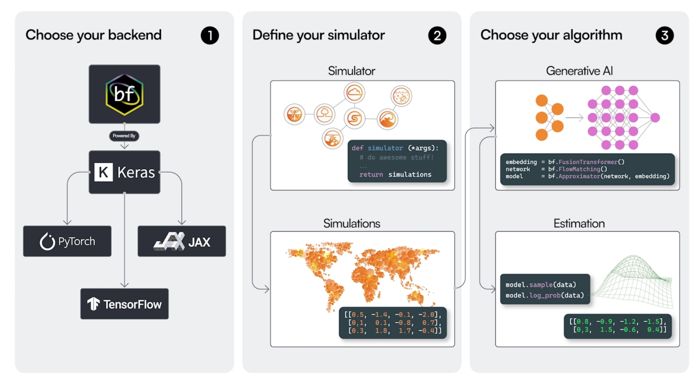
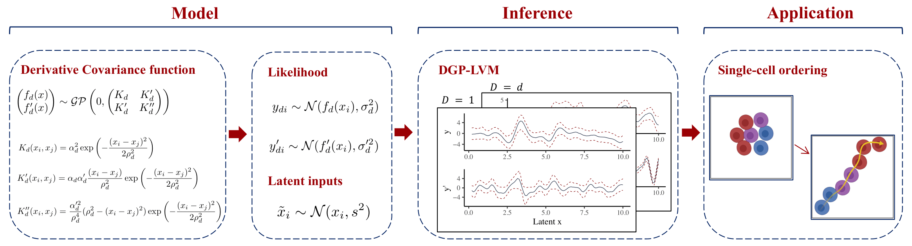

Research Projects
Here you can find an overview of my current research projects. A list of past research projects can be found at the bottom of this page.
Real-Time Spatio-Temporal Data Analysis for Monitoring Logistics Networks
In complex logistics and supply chain networks, the acquisition of tracking data representing the flow of entities through the networks has become state of the art. The goal of tracking entities is to improve transparency and predict the state of the network. An important value for operations is the estimated time of arrival of entities at different nodes of the network. The respective business goal determines the requirements for the forecasting procedure: it might be necessary to detect a delay in a container ship transport as early as possible (weeks before the arrival) to be able to send a replacement for urgent parts by air. Or it might be necessary to predict the arrival of trucks within the next hour as accurately as possible to manage the traffic at logistics sites. However, acquiring data is costly in terms of money, energy used by sensors, and required IT infrastructure.
In this project, we will develop new methods for predicting arrival times in complex logistics networks (e.g., multi-modal transport networks). Our methods will enable (a) the integration of different data types, e.g., event, weather, and tracing data, (b) the ability to cope with changes in the underlying logistics network in real-time, and (c) the ability to communicate uncertainty in predictions, especially in case of tracing data or weather forecasts of limited reliability.
This project is part of the Collaborative Research Center 391 funded by the German Research Foundation.
Overarching Topics: Amortized Inference Uncertainty Quantification
Project Members: Svenja Jedhoff
Funders: German Research Foundation (DFG) TU Dortmund University
Funding Period: 2024 – 2028
Publications:
- Jedhoff S., Kutabi H., Meyer A. & Bürkner P. C. (in review). Efficient Uncertainty Propagation in Bayesian Two-Step Procedures. ArXiv preprint. Preprint Code & Data
Semi-Supervised Learning for Robust Amortized Bayesian Inference

Amortized Bayesian inference (ABI) with neural networks can solve probabilistic inverse problems orders of magnitude faster than classical methods. However, ABI is not yet sufficiently robust for widespread and safe application. When performing inference on observations outside the scope of the simulated training data, posterior approximations are likely to become highly biased, which cannot be adequately corrected just by additional simulations.
In this project, we work on semi-supervised approaches that enable training not only on labeled simulated data generated from the model, but also on data originating from any source, including real-world data. We hypothesize that such approaches can strongly increase estimation accuracy and robustness especially for real-world data outside of the immediate simulation scope.
Overarching Topics: Amortized Inference Uncertainty Quantification
Project Members: Aayush Mishra
Funders: TU Dortmund University
Funding Period: 2024 – 2027
Publications:
Mishra A., Habermann D., Schmitt M., Radev S. T., & Bürkner P. C. (in review). Robust Amortized Bayesian Inference with Self-Consistency Losses on Unlabeled Data. ArXiv preprint. Preprint
Kucharský Š., Mishra A., Habermann D., Radev S. T., & Bürkner P. C. (in review). Improving the Accuracy of Amortized Model Comparison with Self-Consistency. ArXiv preprint. Preprint
Kucharský Š., Mishra A., Habermann D., Radev S. T., & Bürkner P. C. (2025). Towards Trustworthy Amortized Bayesian Model Comparison. NeurIPS Workshop on Reliable Machine Learning from Unreliable Data. PDF Preprint
BayesFlow: Simulation Intelligence with Deep Learning

Simulation intelligence (SI) subsumes an emerging generation of scientific methods which utilize digital simulations for emulating and understanding complex real-world systems and phenomena. Recently, neural networks and deep learning have demonstrated a great potential for accelerating and scaling up SI to previously intractable problems and data sets. However, the availability of user-friendly software is still limited, which hampers the widespread and flexible use of modern SI methods.
In this project, we focus on software for amortized Bayesian inference, which is an essential part of SI. The hallmark feature of amortized Bayesian inference is an upfront training phase (e.g., of a neural network), which is then amortized by a nearly instant fully Bayesian inference for an arbitrary number of data sets during test time. Concretely, we aim to advance the BayesFlow research software library into becoming the long-term, gold-standard software for amortized Bayesian inference.
Overarching Topics: Amortized Inference Machine-Assisted Workflows Uncertainty Quantification
Project Members: Lars Kühmichel
Funders: German Research Foundation (DFG)
Funding Period: 2024 – 2027
Publications:
Bracher N., Kühmichel L., Ivanova D. R., Intes X., Bürkner P. C., & Radev S. T. (in review). JADAI: Jointly Amortizing Adaptive Design and Bayesian Inference. ArXiv preprint. Preprint
Müller, J., Kühmichel, L., Rohbeck, M., Radev, S. T., & Köthe, U. (in review). Towards Context-Aware Domain Generalization: Understanding the Benefits and Limits of Marginal Transfer Learning. ArXiv preprint. Preprint
Habermann D., Schmitt M., Kühmichel L., Bulling A., Radev S. T., & Bürkner P. C. (2025). Amortized Bayesian Multilevel Models. Bayesian Analysis. doi:10.1214/25-BA1570 PDF Journal Preprint
Pogorelyuk, L., Bracher, N. L., Verkleeren, A., Kühmichel, L., & Radev, S. T. (2025). Stable Single-Pixel Contrastive Learning for Semantic and Geometric Tasks. NeurIPS Workshop on Unifying Representations in Neural Models. Conference Code & Data
Applications of Amortized Bayesian Inference
Recent developments in simulation-based amortized inference have ushered in new possibilities for conducting principled Bayesian analysis. The simulation-based approach unlocks the potential of complex models whose likelihoods or priors are not analytically tractable. Amortized approaches make the required computations relatively fast, thus allowing for the deployment of intricate models in scenarios that were hitherto deemed unfeasible or inconvenient. Nevertheless, the novelty of this approach poses a challenge, as its widespread adoption hinges on the availability of user-friendly documentation and resources that simplify entry into the field, as well as empirical examples that validate the method’s usefulness for the practical researchers.
In this project, our emphasis is on applications within cognitive modeling and developmental psychology. We focus on how simulation-based amortized inference can address important challenges within the field, not only during the data analysis phase but also in the planning and execution of studies and experiments. As a by-product we will generate tutorials and educational materials providing gentle introductions into the topic. This project also aims to lay the foundations for integrating simulation-based amortized inference with popular statistical software packages used by practitioners who may not have extensive coding skills, thereby broadening the scope of users benefiting from its advantages.
Overarching Topics: Amortized Inference Latent Variable Modeling Uncertainty Quantification
Project Members: Šimon Kucharský
Funders: TU Dortmund University
Funding Period: 2024 – 2027
Publications:
Kucharský Š. & Bürkner P. C. (in review). Amortized Bayesian Mixture Models. ArXiv preprint. Preprint
Kucharský Š., Mishra A., Habermann D., Radev S. T., & Bürkner P. C. (in review). Improving the Accuracy of Amortized Model Comparison with Self-Consistency. ArXiv preprint. Preprint
Kucharský Š., Mishra A., Habermann D., Radev S. T., & Bürkner P. C. (2025). Towards Trustworthy Amortized Bayesian Model Comparison. NeurIPS Workshop on Reliable Machine Learning from Unreliable Data. PDF Preprint
Kucharský Š. & Bürkner P. C. (2025). Amortized Bayesian Cognitive Modeling with BayesFlow. PsyArXiv preprint. doi:10.31234/osf.io/34k6q_v1 Preprint Website Code & Data
Amortized Bayesian Inference for Multilevel Models
Probabilistic multilevel models (MLMs) are a central building block in Bayesian data analysis. Despite their widely acknowledged advantages, MLMs remain challenging to estimate and evaluate, especially when the involved likelihoods or priors are analytically intractable. Recent developments in generative deep learning and simulation-based inference have shown promising results in scaling up Bayesian inference through amortization. However, the utility of deep generative models for learning Bayesian MLMs remains largely unexplored.
In this project, we propose to develop a general and efficient neural inference framework for estimating and evaluating complex Bayesian MLMs. Our framework will substantially extend previous work on simulation-based Bayesian inference for single-level models. Moreover, it aims to encompass not only the inference phase of a Bayesian workflow but also the model evaluation steps, which usually comprise a computational bottleneck with standard (non-amortized) Bayesian methods. Thus, the proposed project has the potential to greatly enhance model-based inference and understanding of complex processes across the quantitative sciences.
Overarching Topics: Amortized Inference Latent Variable Modeling Uncertainty Quantification
Project Members: Daniel Habermann
Funders: German Research Foundation (DFG)
Funding Period: 2023 – 2026
Publications:
Mishra A., Habermann D., Schmitt M., Radev S. T., & Bürkner P. C. (in review). Robust Amortized Bayesian Inference with Self-Consistency Losses on Unlabeled Data. ArXiv preprint. Preprint
Kucharský Š., Mishra A., Habermann D., Radev S. T., & Bürkner P. C. (2025). Towards Trustworthy Amortized Bayesian Model Comparison. NeurIPS Workshop on Reliable Machine Learning from Unreliable Data. PDF Preprint
Habermann D., Schmitt M., Kühmichel L., Bulling A., Radev S. T., & Bürkner P. C. (2025). Amortized Bayesian Multilevel Models. Bayesian Analysis. doi:10.1214/25-BA1570 PDF Journal Preprint
Schmitt M., Ivanova D. R., Habermann D., Köthe U., Bürkner P. C., & Radev S. T. (2024). Leveraging Self-Consistency for Data-Efficient Amortized Bayesian Inference. Proceedings of the International Conference on Machine Learning (ICML). PDF Conference Preprint
Bayesian Distributional Latent Variable Models
In psychology and related sciences, a lot of research is concerned with studying latent variables, that is, constructs which are not directly observable. Statistical methods for modeling latent variables based on manifest (observable) indicators are thus crucial to the scientific progress in those fields. Two major interconnected statistical areas dealing with latent variables exist, namely, Item Response Theory (IRT) and Structural Equation Modeling (SEM). Although the two fields are closely connected, the frontiers of IRT and SEM have developed in somewhat different directions.
A combination of these two major frontiers would enable researchers to tackle a lot of advanced psychological research questions at the intersection of psychometrics, personnel psychology, cognitive psychology, and applied psychology. In order for us to gain better insights into behavioral and cognitive processes, their mathematical approximations should match the processes’ complexity in both overall distributional form and its components that are expressed as complex functions of predicting variables.
This project aims to develop a framework for Bayesian distributional latent variable models that combines the principles of IRT and SEM with the flexibility of distributional regression powered by modern Bayesian estimation methods.
Overarching Topics: Latent Variable Modeling Machine-Assisted Workflows Uncertainty Quantification
Project Members: Luna Fazio
Funders: German Research Foundation (DFG) TU Dortmund University
Funding Period: 2022 – 2025
Publications:
Fazio L., Scholz M., Aguilar J. E., & Bürkner P. C. (in review). Primed Priors for Simulation-Based Validation of Bayesian Models. ArXiv preprint. Preprint Code & Data
Fazio L. & Bürkner P. C. (2025). Gaussian distributional structural equation models: A framework for modeling latent heteroscedasticity. Multivariate Behavioral Research. doi:10.1080/00273171.2025.2483252 PDF Journal Preprint Code & Data
Simulation-Based Prior Distributions for Bayesian Models

Data-driven statistical modeling plays a crucial role in almost all quantitative sciences. Despite continuous increases in the amount of available data, the addition of further information sources, such as expert knowledge, often remains an irreplaceable part of setting up high-fidelity models. Grounded in probability theory, Bayesian statistics provides a principled approach to including expert knowledge in the form of prior distributions, a process called prior elicitation. However, prior elicitation for high-dimensional Bayesian models is infeasible with existing methods due to practical and computational challenges. With the goal of solving these challenges, we propose to develop simulation-based priors for high-dimensional Bayesian models that allow to incorporate prior information elicited on any model-implied quantities. We expect the developed methods to have a major impact on all fields applying probabilistic modeling by making the use of expert knowledge practical, robust, and computationally feasible.
Overarching Topics: Prior Specification Amortized Inference Uncertainty Quantification
Project Members: Florence Bockting
Funders: TU Dortmund University Cluster of Excellence SimTech
Funding Period: 2022 – 2025
Publications:
Bockting F. & Bürkner P. C. (in review). elicito: A Python Package for Expert Prior Elicitation. ArXiv preprint. Preprint Software
Bockting F., Radev S. T., & Bürkner P. C. (2025). Expert-elicitation method for non-parametric joint priors using normalizing flows. Statistics and Computing. doi:0.1007/s11222-025-10665-z PDF Journal Preprint Code Data
Bockting F., Radev S. T., & Bürkner P. C. (2024). Simulation-Based Prior Knowledge Elicitation for Parametric Bayesian Models. Scientific Reports. doi:10.1038/s41598-024-68090-7 PDF Journal Preprint Code & Data
Probabilistic Models for Single-Cell RNA Sequencing Data

Trajectory and pseudo-time inference methods in single-cell RNA sequencing face challenges from the ambiguity of the static single-cell transcriptome snapshot data. In this project, we aim to tackle this challenge by means of advanced probabilistic methods. Concretely, we aim to reconstruct unobserved cell ordering as latent pseudo-time by analyzing RNA spliced counts and corresponding derivative RNA velocity. Further, we aim to obtain uncertainty estimates of the latent cell ordering using Bayesian inference. To achieve these goals, we will develop advanced latent Gaussian process models with the ability of utilizing derivative information to increase precision in estimating unobserved latent inputs. This model deploys derivative covariance kernel functions and modifications in the hyperparameter specifications, thus increasing capabilities for utilizing derivative information in a multi-output setting. Although the primary motivation lies in applications in single-cell biology, this model has the potential to solve similar research problems dealing with multi-output data and its derivatives from diverse fields of study.
Overarching Topics: Latent Variable Modeling Uncertainty Quantification
Project Members: Soham Mukherjee
Co-Supervisors: Manfred Claassen
Funders: TU Dortmund University University of Tübingen
Funding Period: 2022 – 2025
Publications:
Mukherjee S., Aguilar J. E., Zago M., Claassen M., & Bürkner P. C. (in review). Latent variable estimation with composite Hilbert space Gaussian processes. ArXiv preprint. Preprint Code & Data
Mukherjee S., Claassen M., & Bürkner P. C. (in review). Hilbert space methods for approximating multi-output latent variable Gaussian processes. ArXiv preprint. Preprint Code & Data
Mukherjee S., Claassen M., & Bürkner P. C. (2025). DGP-LVM: Derivative Gaussian process latent variable models. Statistics and Computing. doi:10.1007/s11222-025-10644-4 PDF Journal Preprint Code & Data
Intuitive Joint Priors for Bayesian Multilevel Models

Regression models are ubiquitous in the quantitative sciences making up a big part of all statistical analysis performed on data. In the quantitative sciences, data often contains multilevel structure, for example, because of natural groupings of individuals or repeated measurement of the same individuals. Multilevel models (MLMs) are designed specifically to account for the nested structure in multilevel data and are a widely applied class of regression models. From a Bayesian perspective, the widespread success of MLMs can be explained by the fact that they impose joint priors over a set of parameters with shared hyper-parameters, rather than separate independent priors for each parameter. However, in almost all state-of-the-art approaches, different additive regression terms in MLMs, corresponding to different parameter sets, still receive mutually independent priors. As more and more terms are being added to the model while the number of observations remains constant, such models will overfit the data. This is highly problematic as it leads to unreliable or uninterpretable estimates, bad out-of-sample predictions, and inflated Type I error rates.
To solve these challenges, this project aims to develop, evaluate, implement, and apply intuitive joint priors for Bayesian MLMs. We hypothesize that our developed priors will enable the reliable and interpretable estimation of much more complex Bayesian MLMs than was previously possible.
Overarching Topics: Prior Specification Uncertainty Quantification
Project Members: Javier Aguilar
Funders: German Research Foundation (DFG) TU Dortmund University University of Stuttgart
Funding Period: 2021 – 2025
Publications:
Aguilar J. E. & Bürkner P. C. (in review). Dependency-Aware Shrinkage Priors for High Dimensional Regression. ArXiv preprint. Preprint Code & Data
Aguilar J. E., Kohns D., Vehtari A., & Bürkner P. C. (in review). R2 priors for Grouped Variance Decomposition in High-dimensional Regression. ArXiv preprint. Preprint Code & Data
Fazio L., Scholz M., Aguilar J. E., & Bürkner P. C. (in review). Primed Priors for Simulation-Based Validation of Bayesian Models. ArXiv preprint. Preprint Code & Data
Mukherjee S., Aguilar J. E., Zago M., Claassen M., & Bürkner P. C. (in review). Latent variable estimation with composite Hilbert space Gaussian processes. ArXiv preprint. Preprint Code & Data
Aguilar J. E. & Bürkner P. C. (2025). Generalized Decomposition Priors on R2. Bayesian Analysis. doi:10.1214/25-BA1524 PDF Journal Preprint Code & Data
Reiser P., Aguilar J. E., Guthke A., & Bürkner P. C. (2025). Uncertainty Quantification and Propagation in Surrogate-based Bayesian Inference. Statistics and Computing. doi:10.1007/s11222-025-10597-8 PDF Journal Preprint Code & Data
Aguilar J. E. & Bürkner P. C. (2023). Intuitive Joint Priors for Bayesian Linear Multilevel Models: The R2D2M2 prior. Electronic Journal of Statistics. doi:10.1214/23-EJS2136 PDF Journal Preprint Code & Data Talk
Past Projects

What we can learn from a single data set in experiments and observational studies is always limited, and we are inevitably left with some remaining uncertainty. It is of utmost importance to take this uncertainty into account when drawing conclusions if we want to make real scientific progress. Formalizing and quantifying uncertainty is thus at the heart of statistical methods aiming to obtain insights from data.
To compare scientific theories, scientists translate them into statistical models and then investigate how well the models’ predictions match the gathered real-world data. One widely applied approach to compare statistical models is Bayesian model comparison (BMC). Relying on BMC, researchers obtain the probability that each of the competing models is true (or is closest to the truth) given the data. These probabilities are measures of uncertainty and, yet, are also uncertain themselves. This is what we call meta-uncertainty (uncertainty over uncertainties). Meta-uncertainty affects the conclusions we can draw from model comparisons and, consequently, the conclusions we can draw about the underlying scientific theories.
This project contributes to this endeavor by developing and evaluating methods for quantifying meta-uncertainty in BMC. Building upon mathematical theory of meta-uncertainty, we will utilize extensive model simulations as an additional source of information, which enable us to quantify so-far implicit yet important assumptions of BMC. What is more, we will be able to differentiate between a closed world, where the true model is assumed to be within the set of considered models, and an open world, where the true model may not be within that set – a critical distinction in the context of model comparison procedures.
Overarching Topics: Model Comparison Uncertainty Quantification Amortized Inference
Project Members: Marvin Schmitt
Funders: Cyber Valley Research Fund
Funding Period: 2021 – 2025
Publications:
Schmitt M., Hikida Y., Radev S. T., Sadlo F., & Bürkner P. C. (in review). The Simplex Projection: Lossless Visualization of 4D Compositional Data on a 2D Canvas. ArXiv preprint. Preprint Software Tutorial
Habermann D., Schmitt M., Kühmichel L., Bulling A., Radev S. T., & Bürkner P. C. (in review). Amortized Bayesian Multilevel Models. ArXiv preprint. Preprint
Mishra A., Habermann D., Schmitt M., Radev S. T., & Bürkner P. C. (in review). Robust Amortized Bayesian Inference with Self-Consistency Losses on Unlabeled Data. ArXiv preprint. Preprint
Schmitt M., Bürkner P. C., Köthe U., & Radev S. T. (accepted). Detecting Model Misspecification in Amortized Bayesian Inference with Neural Networks: An Extended Investigation. International Journal of Computer Vision. Preprint Code & Data
Schmitt M., Pratz V., Köthe U., Bürkner P. C., & Radev S. T. (2024). Consistency Models for Scalable and Fast Simulation-Based Inference. Proceedings of the Conference on Neural Information Processing Systems (NeurIPS). PDF Journal Preprint
Schmitt M., Li C., Vehtari A., Acerbi L., Bürkner P. C., Radev S. T. (2024). Amortized Bayesian Workflow (Extended Abstract). NeurIPS Workshop on Bayesian Decision-Making and Uncertainty. PDF Preprint
Schmitt M., Ivanova D. R., Habermann D., Köthe U., Bürkner P. C., & Radev S. T. (2024). Leveraging Self-Consistency for Data-Efficient Amortized Bayesian Inference. Proceedings of the International Conference on Machine Learning (ICML). PDF Conference Preprint
Elsemüller L., Olischläger H., Schmitt M., Bürkner P. C., Köthe U., & Radev S. T. (2024). Sensitivity-Aware Amortized Bayesian Inference. Transactions in Machine Learning Research. PDF Journal Preprint Code & Data
Schmitt M., Radev S. T., & Bürkner P. C. (2024). Fuse It or Lose It: Deep Fusion for Multimodal Simulation-Based Inference. ArXiv preprint. doi:10.48550/arXiv.2311.10671 PDF Preprint
Schmitt M., Radev, S. T., & Bürkner P. C. (2023). Meta-Uncertainty in Bayesian Model Comparison. Artificial Intelligence and Statistics (AISTATS) Conference Proceedings. PDF Conference Preprint Code & Data Talk
Schmitt M., Bürkner P. C., Köthe U., & Radev S. T. (2023). Detecting Model Misspecification in Amortized Bayesian Inference with Neural Networks. Proceedings of the German Conference on Pattern Recognition (GCPR). doi:10.1007/978-3-031-54605-1_35 PDF Conference Preprint Code & Data Talk Poster
Radev S. T., Schmitt M., Pratz V., Picchini U., Köthe U., & Bürkner P. C. (2023). JANA: Jointly Amortized Neural Approximation of Complex Bayesian Models. Uncertainty in Artificial Intelligence (UAI) Conference Proceedings. PDF Conference Preprint Code & Data Talk
Radev S. T., Schmitt M., Schumacher L., Elsemüller L., Pratz V., Schälte Y., Köthe U., & Bürkner P. C. (2023). BayesFlow: Amortized Bayesian Workflows With Neural Networks. Journal of Open Source Software. doi:10.21105/joss.05702 PDF Journal Preprint Software
Software:
- ggsimplex: Simplex visualizations with ggplot2 GitHub

The Bayesian approach to data analysis provides a consistent and flexible way to handle uncertainty in all observations, model parameters, and model structure using probability theory. However, building Bayesian models in a principled way remains a highly complex task requiring a lot of expertise and cognitive resources. In this project, we will develop a machine assisted workflow for building interpretable, robust, and well-predicting Bayesian models. Based on statistical theory, we will develop a framework for simulating realistic data with known modeling challenges. Subsequently, using neural network architectures tuned to the structure of the fitted Bayesian models, machines will be trained on the simulated data to provide automatic model evaluation and modeling recommendations that guide the user through the model building process using interactive visualizations. While leaving the modeling choices up to the user, the machine learns from the user’s decisions to improve its recommendations on the fly.
Overarching Topics: Machine-Assisted Workflows Model Comparison Uncertainty Quantification
Project Members: Maximilian Scholz
Funders: Cluster of Excellence SimTech
Funding Period: 2021 – 2024
Publications:
Fazio L., Scholz M., Aguilar J. E., & Bürkner P. C. (in review). Primed Priors for Simulation-Based Validation of Bayesian Models. ArXiv preprint. Preprint Code & Data
Scholz M. & Bürkner P. C. (in review). Posterior accuracy and calibration under misspecification in Bayesian generalized linear models. ArXiv preprint. Preprint Code & Data Software
Scholz M. & Bürkner P. C. (2025). Prediction can be safely used as a proxy for explanation in causally consistent Bayesian generalized linear models. Journal of Statistical Computation and Simulation. doi:10.1080/00949655.2024.2449534 PDF Journal Preprint Code & Data Software
Bürkner P. C., Scholz M., & Radev S. T. (2023). Some models are useful, but how do we know which ones? Towards a unified Bayesian model taxonomy. Statistics Surveys. doi:10.1214/23-SS145 PDF Journal Preprint
Software: